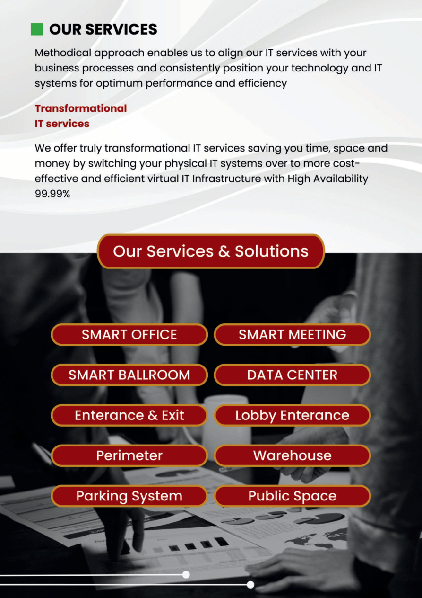
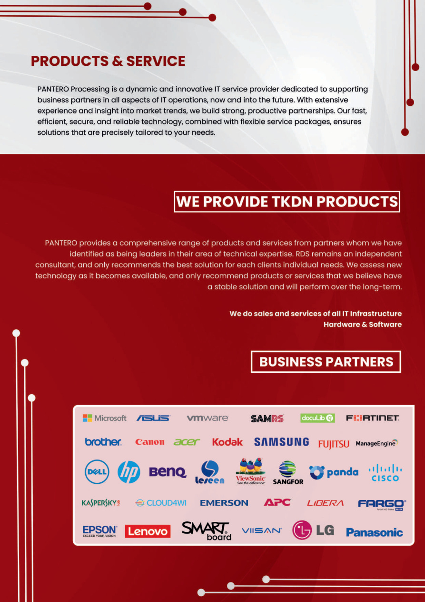
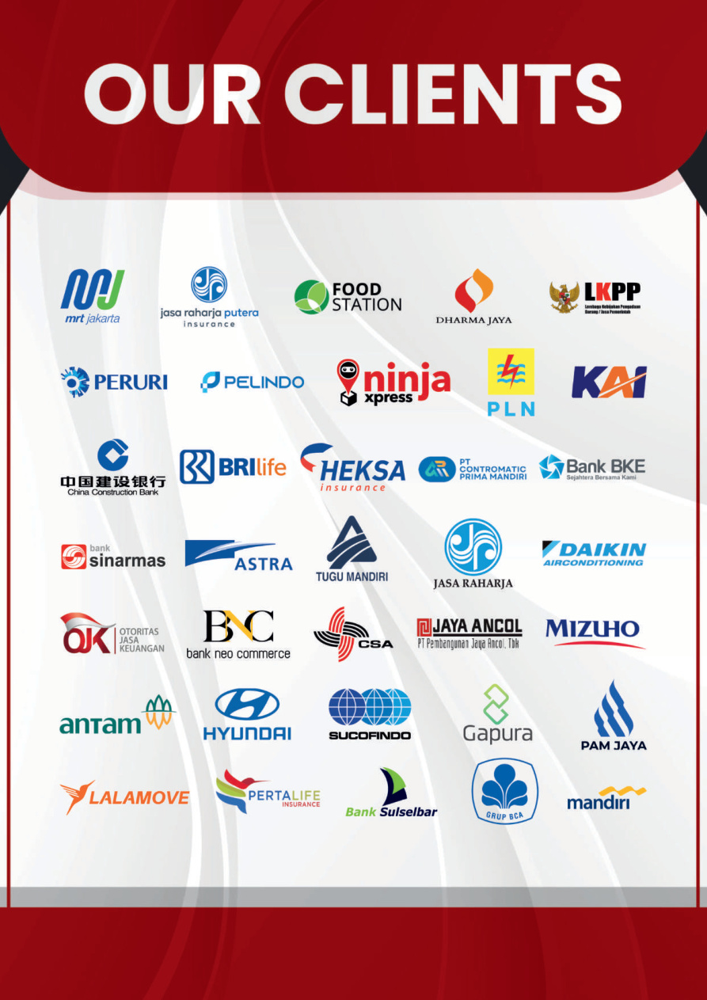

Transparan, jujur, dan menjaga kepercayaan client.
System Integrator • Information Technology
Solusi IT terintegrasi untuk bisnis yang aman, efisien, dan siap berkembang.
PT Pantero Selaras Agung menyediakan layanan IT infrastructure, managed service, smart office, data center, security system, dan solusi teknologi end-to-end.
Market Focus
Managed Services & IT Infrastructure
Hardware, software, implementation, operation, monitoring, dan optimasi sesuai kebutuhan client.
About Company
Partner teknologi yang fokus pada problem-solving.
Pantero Processing adalah perusahaan IT system integration dan service company yang berkomitmen menghadirkan solusi IT terbaik untuk membantu client mencapai tujuan bisnis.
Dengan pendekatan terstruktur, PSA membantu dari diskusi kebutuhan, assessment, design, implementasi, operasional, sampai optimasi berkelanjutan.
6Step delivery process
24/7Operation consultancy option
99.99%High availability target
Company Values
Nilai kerja yang jadi pondasi layanan.
Standar kualitas tinggi dalam delivery dan support.
Kolaborasi kuat antar tim dan stakeholder.
Solusi modern untuk kebutuhan bisnis masa depan.
Konsisten dari perencanaan sampai operasional.
Teknologi disesuaikan dengan tujuan bisnis.
Our Approach
Dari assessment sampai optimization.
01
Prepare
Consultation, business planning, dan ROI analysis.
02
Plan
Assessment, design, POC, deployment planning, dan training.
03
Design
Low-level design solution yang spesifik dan detail.
04
Implement
Transport, staging, engineering, project management, integration, testing, acceptance.
05
Operate
Consultancy, spare part management, 24/7 SLG, dan preventive maintenance.
06
Optimize
Audit, performance analysis, reporting, dan improvement.

Our Services
Layanan IT untuk transformasi bisnis.
- IT Maintenance & Annual Maintenance Contract
- IT Service Level Agreement
- Managed Services
- IT Consultant, IT Relocation, dan IT Network
- Transformational IT Services & Virtual Infrastructure
Solutions
Solusi untuk area operasional modern.
Smart Office
CCTV, access control, speaker system, interactive flat panel, visitor terminal, dan NVR.
Smart Meeting
Meeting room dengan video surveillance, panel interaktif, dan access control.
Smart Ballroom
Audio visual, LED wall, camera, dan control system untuk ruang event.
Data Center
Cabling, networking, server rack, server, dan cloud server.
Entrance & Exit
Barrier gate, ticket dispenser, ANPR, reader, under vehicle surveillance, dan NVR.
Lobby Entrance
Digital signage, visitor terminal, metal detector, dan security inspection.
Perimeter
PTZ camera, thermography bullet, tandem camera, ColorVu, AcuSense, dan recorder.
Warehouse
Anti-corrosion camera, explosion-proof camera, face recognition, access terminal, dan panic alarm.
Parking Guidance
Screen guidance, parking guidance camera, dan LED parking guidance display.
Public Space
Face recognition camera, PanoVu camera, TandemVu camera, dan panic alarm panel.
Products & Partners
Didukung ekosistem teknologi luas.
PSA menyediakan produk TKDN dan solusi dari berbagai partner teknologi untuk hardware, software, security, cloud, networking, dan infrastructure.

Our Clients
Dipercaya oleh berbagai sektor industri.

Contact
Siap diskusi kebutuhan IT perusahaan?
Komplek Ketapang Indah Blok B3 No. 11, Jalan KH. Zainul Arifin No. 02, Jakarta Barat 11140